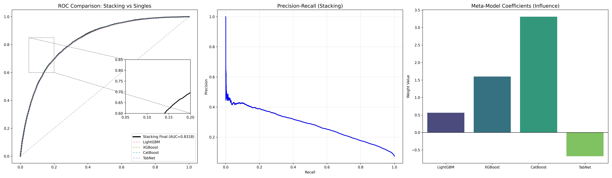
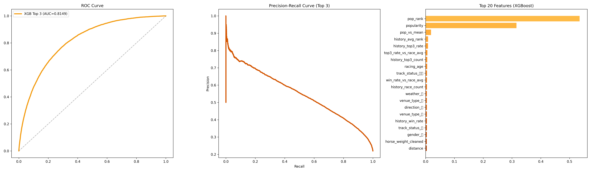
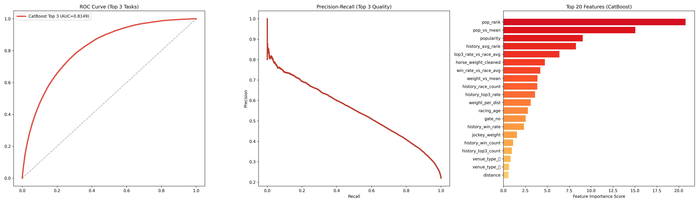
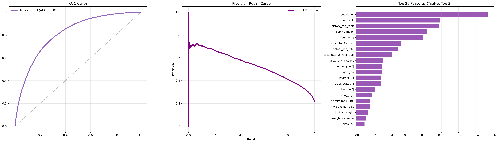
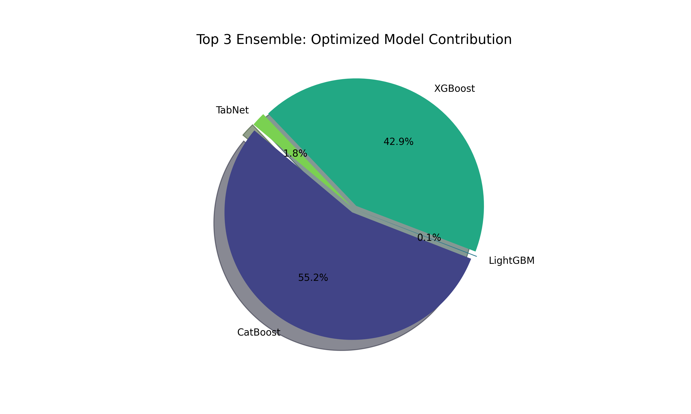
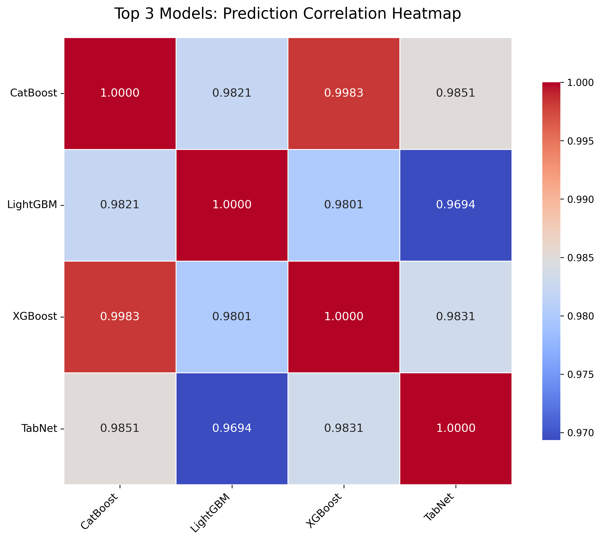
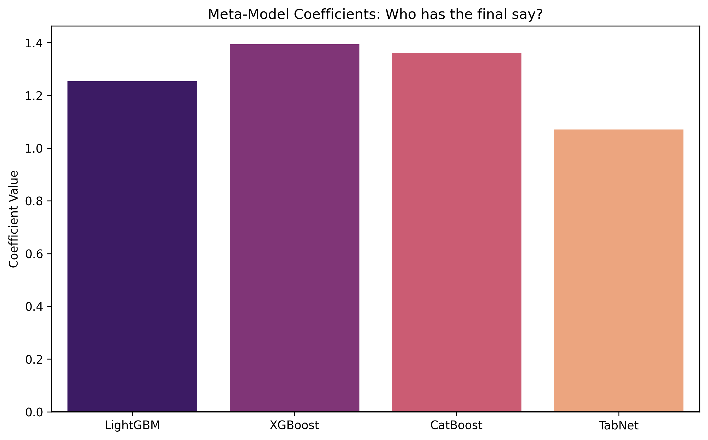
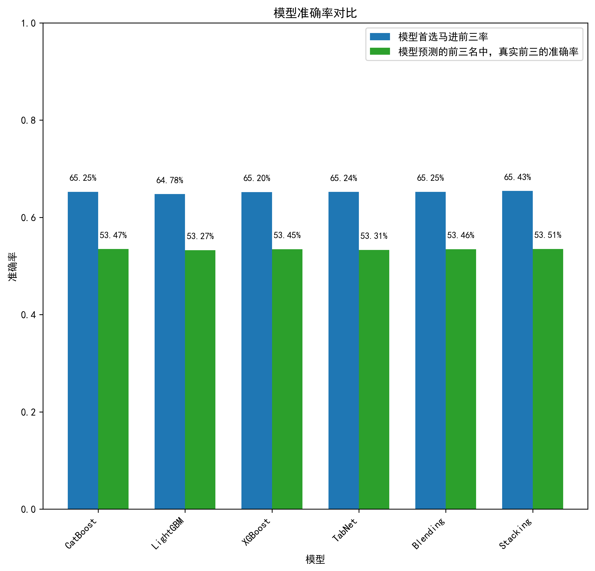

赛马预测项目实验报告
1. 项目概述
本项目是数据科学导论课程的大作业，选题为赛马预测。报告将详细介绍项目的组织结构、各代码文件功能、完整实施流程、数据科学知识应用及相关扩展内容。
本项目旨在通过数据科学方法，对赛马比赛结果进行预测，主要分为两个预测目标：预测马匹获得第一名（Top1）和预测马匹进入前三名（Top3）。项目采用了完整的数据科学流程，包括数据获取、数据导入数据库、数据清洗、特征工程、模型训练和结果分析等环节，最终实现了较高的预测准确率。
特别声明：本项目为纯学习与研究性质的数据分析实践项目，旨在探索数据科学的应用，不涉及任何形式的博彩活动，本人坚决反对任何形式的博彩行为。
2. 项目组织结构
本项目采用了模块化的组织结构，将不同功能的代码和数据分离存储，便于维护和扩展。项目主要包含以下文件夹：
2.1 项目根目录结构
├── .venv/ # 虚拟环境文件夹
├── Top1/ # 预测马匹获得第一名的相关代码和数据
│ ├── data/ # 预处理后的训练和测试数据
│ │ ├── X_test_final.csv # 测试集特征数据
│ │ ├── X_train_final.csv # 训练集特征数据
│ │ ├── y_test_final.csv # 测试集标签数据
│ │ └── y_train_final.csv # 训练集标签数据
│ ├── result/ # 模型训练和预测结果
│ │ └── ... # 模型训练结果文件(同Top3)
│ └── src/ # 源代码文件
│ ├── DataProcessing/ # 数据处理相关代码
│ │ ├── csv_encoding_cleaner.py # CSV文件编码处理
│ │ ├── data_fetch.py # 赛马数据爬取
│ │ ├── horse_info_insert.py # 马匹信息插入数据库
│ │ ├── horse_info_preprocessing.py # 马匹信息预处理
│ │ ├── horse_race_data_clean.py # 赛马比赛数据清洗
│ │ ├── horse_race_info_insert.py # 赛马比赛信息插入数据库
│ │ ├── horse_race_obstacle_delete.py # 删除障碍赛数据
│ │ └── race_info_insert.py # 比赛基本信息插入数据库
│ ├── TuningTraining/ # 模型调优和训练代码
│ │ ├── blending_tuning_final.py # Blending集成模型调优
│ │ ├── cat_tuning_final.py # CatBoost模型调优
│ │ ├── lgbm_tuning_final.py # LightGBM模型调优
│ │ ├── model_tabnet.py # TabNet模型调优和训练
│ │ ├── stacking_tuning_final.py # Stacking集成模型调优
│ │ ├── stacking_validation.py # Stacking模型验证
│ │ ├── xgb_tuning_final.py # XGBoost模型调优
│ │ └── catboost_info/ # CatBoost训练日志
│ ├── catboost_info/ # CatBoost训练日志
│ └── accuracy_test.py # 模型准确率测试和评估
├── Top3/ # 预测马匹进入前三名的相关代码和数据
│ ├── data/ # 原始数据和预处理后的训练测试数据
│ │ ├── 2016/ # 2016年的原始赛马数据
│ │ ├── 2017/ # 2017年的原始赛马数据
│ │ ├── 2018/ # 2018年的原始赛马数据
│ │ ├── X_test_final.csv # 测试集特征数据
│ │ ├── X_train_final.csv # 训练集特征数据
│ │ ├── y_test_final.csv # 测试集标签数据
│ │ └── y_train_final.csv # 训练集标签数据
│ ├── result/ # 模型训练和预测结果
│ │ ├── blending_top3_tuning_result/ # Blending集成模型结果
│ │ ├── cat_top3_tuning_result/ # CatBoost模型结果
│ │ ├── hit_rate_analysis/ # 命中率分析结果
│ │ ├── lgbm_top3_tuning_result/ # LightGBM模型结果
│ │ ├── stacking_top3_result/ # Stacking集成模型结果
│ │ ├── tabnet_top3_result/ # TabNet模型结果
│ │ └── xgb_top3_tuning_result/ # XGBoost模型结果
│ └── src/ # 源代码文件
│ ├── DataProcessing/ # 数据处理相关代码（与Top1相同）
│ │ ├── csv_encoding_cleaner.py # CSV文件编码处理
│ │ ├── data_fetch.py # 赛马数据爬取
│ │ ├── horse_info_insert.py # 马匹信息插入数据库
│ │ ├── horse_info_preprocessing.py # 马匹信息预处理
│ │ ├── horse_race_data_clean.py # 赛马比赛数据清洗
│ │ ├── horse_race_info_insert.py # 赛马比赛信息插入数据库
│ │ ├── horse_race_obstacle_delete.py # 删除障碍赛数据
│ │ └── race_info_insert.py # 比赛基本信息插入数据库
│ ├── GeneralTraining/ # 一般模型训练代码
│ │ ├── model_blending_4.py # Blending集成模型训练
│ │ ├── model_catboost.py # CatBoost模型训练
│ │ ├── model_lgbm.py # LightGBM模型训练
│ │ ├── model_stacking_4.py # Stacking集成模型训练
│ │ ├── model_tabnet.py # TabNet模型训练
│ │ └── model_xgb.py # XGBoost模型训练
│ ├── TuningTraining/ # 模型调优和训练代码
│ │ ├── blending_tuning_final.py # Blending集成模型调优
│ │ ├── cat_tuning_final.py # CatBoost模型调优
│ │ ├── lgbm_tuning_final.py # LightGBM模型调优
│ │ ├── model_tabnet.py # TabNet模型调优和训练
│ │ ├── stacking_tuning_final.py # Stacking集成模型调优
│ │ ├── xgb_tuning_final.py # XGBoost模型调优
│ │ └── catboost_info/ # CatBoost训练日志
│ ├── catboost_info/ # CatBoost训练日志
│ └── accuracy_test.py # 模型准确率测试和评估
└── README.md # 项目说明文档
2.2 核心文件夹功能说明
2.2.1 Top1 和 Top3 文件夹
这两个文件夹分别对应两种不同的预测任务：
- Top1/：专注于预测马匹获得第一名的任务
- Top3/：专注于预测马匹进入前三名的任务
每个文件夹内部结构相似，均包含 data/、result/ 和 src/ 子文件夹。
2.2.2 data/ 文件夹
- Top1/data/：存储预处理后的训练和测试数据，包括 X_train_final.csv、X_test_final.csv、y_train_final.csv、y_test_final.csv
- Top3/data/：
- 存储原始赛马数据，按年份分类（如 2016/ 文件夹包含 2016 年的所有比赛数据）
- 原始数据文件以 CSV 格式存储，文件名包含比赛日期、场地、场次等信息
- 同时包含预处理后的训练测试数据，与 Top1 相同
2.2.3 result/ 文件夹
- 存储预测任务的模型训练结果和报告
- 每个模型的结果文件夹包含训练报告、结果和可视化图表
2.2.4 src/ 文件夹
源代码文件夹，采用模块化设计，按功能分为不同的子文件夹：
- DataProcessing/：数据处理相关代码，包括数据获取、清洗、预处理和特征工程
- GeneralTraining/：一般模型训练代码，实现了多种基础模型
- TuningTraining/：模型调优和训练代码，使用 Optuna 进行超参数调优
- catboost_info/：CatBoost 模型训练过程中生成的日志和信息（不重要）
3. 代码文件功能说明
3.1 数据处理模块（DataProcessing/）
3.1.1 data_fetch.py
- 主要功能：实现赛马数据的爬取功能
- 核心算法：使用网络爬虫技术从 netkeiba 网站获取赛马数据
- 关键实现：
- 实现了反爬机制，包括频率控制和请求头伪装
- 爬取了 从 2016-2025 共 10 年的 JRA 中央赛马数据，共 33002 场比赛，54171 匹赛马，455976 条完赛数据
- 将爬取的数据存储为 CSV 格式
3.1.2 csv_encoding_cleaner.py
- 路径：src/DataProcessing/csv_encoding_cleaner.py
- 主要功能：处理 CSV 文件的编码问题，确保数据可以正确读取
- 核心算法：检测并转换文件编码，处理乱码数据
- 关键实现：
- 删除乱码数据（约 1400 条）
- 确保所有 CSV 文件使用统一的编码格式（UTF-8）
3.1.3 数据库操作相关文件
- horse_info_insert.py：将马匹信息插入数据库
- horse_race_info_insert.py：将赛马比赛信息插入数据库
- race_info_insert.py：将比赛基本信息插入数据库
- 核心功能：实现数据从 CSV 文件到 MySQL 数据库的导入
- 关键实现：
- 建立数据库连接
- 创建数据库表结构
- 批量插入数据
- 异常处理机制
3.1.4 horse_race_data_clean.py
- 路径：src/DataProcessing/horse_race_data_clean.py
- 主要功能：清洗赛马比赛数据
- 核心算法：异常值检测和处理、重复数据删除
- 关键实现：
- 删除赔率异常数据（接近 1000 条，赔率>550）
- 处理缺失值和异常值
3.1.5 horse_race_obstacle_delete.py
- 路径：src/DataProcessing/horse_race_obstacle_delete.py
- 主要功能：删除障碍赛数据
- 核心算法：基于比赛类型的筛选
- 关键实现：
- 删除障碍赛马比赛数据（接近 1000 条）
- 只保留速度赛马比赛数据用于后续分析
3.1.6 horse_info_preprocessing.py
- 路径：src/DataProcessing/horse_info_preprocessing.py
- 主要功能：对马匹基本信息进行预处理
- 核心算法：数据清洗、格式转换和特征提取
- 关键实现：
- 处理马匹性别、年龄等基本信息
- 转换数据类型，处理缺失值
- 进行特征工程，提取马匹组内相对特征、历史战绩特征
3.2 模型训练模块
3.2.1 一般模型训练（GeneralTraining/）
- model_lgbm.py：实现 LightGBM 模型训练
- model_xgb.py：实现 XGBoost 模型训练
- model_catboost.py：实现 CatBoost 模型训练
- model_tabnet.py：实现 TabNet 深度学习模型训练
- model_blending_4.py：实现四种模型的 Blending 集成
- model_stacking_4.py：实现四种模型的 Stacking 集成
3.2.2 模型调优训练（TuningTraining/）
- lgbm_tuning_final.py：使用 Optuna 对 LightGBM 模型进行超参数调优
- xgb_tuning_final.py：使用 Optuna 对 XGBoost 模型进行超参数调优
- cat_tuning_final.py：使用 Optuna 对 CatBoost 模型进行超参数调优
- model_tabnet.py：TabNet 模型调优和训练
- blening_tuning_final.py：Blending 集成模型调优
- stacking_tuning_final.py：Stacking 集成模型调优
3.2.3 accuracy_test.py
- 路径：src/accuracy_test.py
- 主要功能：模型准确率测试和评估
- 核心算法：计算某一模型的 AUC、准确率、F1 分数等评估指标
- 关键实现：
- 加载训练好的模型和测试数据
- 进行预测并计算评估指标
- 生成评估报告
4. 项目实施步骤
4.1 数据获取
4.1.1 数据来源
本项目的数据来源于日本中央赛马会（JRA）的公开数据，通过网络爬虫从 netkeiba 网站获取。该网站提供了详细的赛马比赛数据，包括马匹信息、比赛结果、赔率等。
4.1.2 数据获取方法
- 爬虫技术：使用 Python 编写爬虫程序，通过请求网站比赛数据网页，使用 XPath 提取数据
- 反爬措施：
- 实现了请求频率控制
- 伪装请求头，模拟浏览器行为
- 采用分布式爬取策略，提高爬取效率
- 分多次请求，避免被封禁
4.1.3 数据规模和字段
- 数据规模：爬取了 10 年的 JRA 中央赛马数据，共 33002 场比赛，54171 匹赛马，438536 条完赛数据
- 包含字段：
- 马匹信息：马匹 ID、姓名、性别、年龄、体重等
- 比赛信息：比赛 ID、日期、场地、距离、天气、赛道状态等
- 比赛结果：名次、时间、骑手、负重、赔率、人气等
4.2 数据导入数据库
4.2.1 数据库选择
本项目选择 MySQL 作为数据库，主要考虑以下因素：
- 关系型数据适合存储结构化的赛马数据
- MySQL 具有良好的性能和稳定性
4.2.2 数据库表结构设计
项目设计了三个核心表：
-
horse表：存储马匹基本信息
- horse_name：马匹名称，作为马匹唯一标识和 horse 表的主键（根据赛马命名规则，十年内不会出现重名马）
- gender：性别
- 其他马匹相关属性
-
race表：存储比赛基本信息
- race_id：比赛唯一标识
- venue_type：比赛场地类型（ダ、芝）
- distance：比赛距离
- weather：天气(晴、曇、小雨、雨、小雪、雪)
- track_status：赛道状态（良、不良、稍重、重）
- direction：比赛方向（左、右）
-
horse_race表：存储马匹参赛结果
- hr_id：记录唯一标识
- horse_id：马匹 ID（外键）
- race_id：比赛 ID（外键）
- finish_rank：完赛名次
- win_odds：获胜赔率
- popularity：人气排名
- jockey：骑手
- weight：负重
- 其他比赛结果相关属性
4.2.3 数据导入流程
- 读取 CSV 数据
- 建立 MySQL 数据库连接
- 创建数据库表结构
- 批量插入数据到对应表中
4.3 数据清洗
4.3.1 原始数据问题
- 乱码数据：部分 CSV 文件存在编码问题，导致数据乱码
- 障碍赛数据：包含障碍赛数据，与速度赛马数据特征差异较大
- 异常赔率数据：部分比赛赔率异常高（>550）
- 缺失值：部分字段可能存在缺失值
- 重复数据：可能存在少量重复记录
4.3.2 清洗方法和策略
- 乱码数据处理：使用 csv_encoding_cleaner.py 检测并删除乱码数据，约删除 1400 场比赛数据
- 障碍赛数据处理：使用 horse_race_obstacle_delete.py 删除障碍赛数据，约删除 1000 场比赛数据
- 异常赔率处理：使用 horse_race_data_clean.py 删除赔率>550 的数据，约删除 1000 条马匹完赛数据
- 缺失值处理：
- 数值列：优先用同场赛事的均值填充，若仍有缺失则用全局均值
- 类别列：填充列的众数
- 重复数据处理：使用 pandas 的 drop_duplicates()方法删除重复记录
（实际上没有出现缺失值和重复数据）
4.4 数据预处理与特征工程
4.4.1 数据预处理步骤
- 数据标准化/归一化：对数值型特征进行标准化处理，使其均值为 0，方差为 1
- 数据类型转换：将文本型数据转换为类别型数据
- 去除掉不需要的特征：去除掉赔率特征（难以用于赛前预测），去除掉完赛时间特征（数据泄露）等等
4.4.2 特征工程实施
-
组内相对特征构建：
- weight_vs_mean：单马骑手负重 - 本场平均负重
- win_rate_vs_race_avg：单马胜率 - 本场平均胜率
- top3_rate_vs_race_avg：单马前 3 名率 - 本场平均前 3 名率
- ...
-
历史特征计算：
- history_race_count：该马历史参赛场数
- history_top3_count：历史前 3 名次数
- history_avg_rank：历史平均排名
- history_win_rate：历史胜率
- ...
-
交互特征与变换：
- weight_per_dist：骑手负重 /（赛事距离 / 1000）
-
类别特征编码：
- 对性别（gender）、场地类型（venue_type）、赛道方向（direction）等做独热编码
-
标签生成：
- Top1 任务：将 finish_rank == 1 设为 1，其余设为 0
- Top3 任务：将 finish_rank <= 3 设为 1，其余设为 0
-
时序切分：
- 严格按赛事时序切分，80%前的赛事为训练集，20%后为测试集
- 避免时间泄露，确保模型训练时不会使用未来数据
- 符合真实赛马预测场景：
- 训练集：历史数据，用于模型训练
- 测试集：最新数据，模拟真实预测场景
4.5 模型训练
4.5.1 模型选择
本项目选择了多种机器学习模型进行比较和集成，包括：
- LightGBM：基于梯度提升决策树的算法，具有高效、低内存占用的特点
- XGBoost：经典的梯度提升算法，具有良好的预测性能
- CatBoost：支持类别特征的梯度提升算法，减少了特征工程的工作量
- TabNet：基于注意力机制的深度学习模型，适合处理表格数据
4.5.2 模型训练过程
-
数据划分：
- 训练集：80%的历史赛事数据
- 测试集：20%的最新赛事数据
-
超参数调优：
- 使用 Optuna 库进行超参数调优
- 针对每个模型设置不同的搜索空间
- 以 AUC 作为主要评价指标
-
模型集成：
- Blending：将多个模型的预测结果进行加权平均
- Stacking：使用元模型对基础模型的预测结果进行再训练
-
训练监控：
- 记录模型训练过程中的损失函数变化
- 监控模型在验证集上的性能
- 防止过拟合
4.6 结果分析
4.6.1 评估指标
本项目主要使用以下评估指标：
- AUC：ROC 曲线下面积，衡量模型的整体预测能力
- 精确率：预测为正样本中实际为正样本的比例
- F1 分数：精确率和召回率的调和平均值
4.6.2 模型性能对比
本项目针对两个预测目标分别进行了模型训练和评估，以下是两类模型的性能对比情况：
4.6.2.1 单胜（Top1）模型性能对比
单胜预测目标是预测马匹获得第一名的概率，以下是各模型在单胜预测任务上的真实性能表现：
| 模型 | AUC | F1 分数 | LogLoss | Best Threshold |
|---|---|---|---|---|
| LightGBM | 0.828256 | 0.362551 | 0.489453 | 0.7122 |
| XGBoost | 0.831369 | 0.367407 | 0.383545 | 0.6122 |
| CatBoost | 0.831947 | 0.367420 | 0.425966 | 0.6477 |
| TabNet | 0.829163 | 0.364085 | 0.209886 | 0.1976 |
| Blending | 0.831951 | 0.367680 | 0.391985 | 0.6124 |
| Stacking | 0.831813 | 0.367340 | 0.209285 | 0.1807 |
指标说明：
- AUC：ROC 曲线下面积，衡量模型的整体预测能力
- F1 分数：精确率和召回率的调和平均值，综合衡量模型性能
- LogLoss：对数损失，衡量概率预测的准确性
- Best Threshold：最佳分类阈值，用于将概率转换为类别预测
4.6.2.2 前三（Top3）模型性能对比
前三预测目标是预测马匹进入前三名的概率，以下是各模型在前三预测任务上的真实性能表现：
| 模型 | AUC | F1 分数 | LogLoss | Best Threshold |
|---|---|---|---|---|
| LightGBM | 0.811574 | 0.553304 | 0.561226 | 0.6182 |
| XGBoost | 0.814892 | 0.557099 | 0.467971 | 0.4944 |
| CatBoost | 0.814937 | 0.555927 | 0.485584 | 0.5216 |
| TabNet | 0.811262 | 0.556502 | 0.537075 | 0.5710 |
| Blending | 0.815020 | 0.556735 | 0.478347 | 0.5188 |
| Stacking | 0.814691 | 0.556605 | 0.412087 | 0.2826 |
指标说明：
- AUC：ROC 曲线下面积，衡量模型的整体预测能力
- F1 分数：精确率和召回率的调和平均值，综合衡量模型性能
- LogLoss：对数损失，衡量概率预测的准确性
- Best Threshold：最佳分类阈值，用于将概率转换为类别预测
4.6.3 结果可视化
4.6.3.1 单胜（Top1）模型结果可视化
-
基础模型图表
- ROC 曲线对比：展示各模型在单胜预测任务上的 ROC 曲线，各模型的曲线极为接近，AUC 均在 0.83 左右
- 特征重要性分析：分析各模型的特征重要性，pop_rank、popularity、pop_vs_mean 等特征在单胜预测中具有较高的重要性
- Precision-Recall 曲线对比：展示各模型在单胜预测任务上的 Precision-Recall 曲线
- LightGBM:

- XGBoost:

- CatBoost:

- TabNet:

-
Blending 模型相关图表
- Blending 模型权重分配：展示 Blending 集成模型中各基础模型的权重分配情况，CatBoost 权重占比最大，达 80%。LGBM 权重最小，仅为 1%

- 基础模型相关性分析：展示各基础模型之间的相关性，可见三个机器学习模型的相关性极高，而深度学习模型与其他几个模型的相关性较低

- Blending 模型权重分配：展示 Blending 集成模型中各基础模型的权重分配情况，CatBoost 权重占比最大，达 80%。LGBM 权重最小，仅为 1%
-
Stacking 模型相关图表：
- ROC 曲线对比：展示各模型在单胜预测任务上的 ROC 曲线，各模型的曲线极为接近，AUC 均在 0.83 左右
- Precision-Recall 曲线对比：展示各模型在单胜预测任务上的 Precision-Recall 曲线
- Stacking 模型权重分配：展示 Stacking 集成模型中各基础模型的权重分配情况，XGBoost 和 CatBoost 权重较高

-
模型准确率图表

4.6.3.2 前三（Top3）模型结果可视化
-
基础模型图表
- ROC 曲线对比：展示各模型在单胜预测任务上的 ROC 曲线，各模型的曲线极为接近，AUC 均在 0.83 左右
- 特征重要性分析：分析各模型的特征重要性，pop_rank、popularity、pop_vs_mean 等特征在单胜预测中具有较高的重要性
- Precision-Recall 曲线对比：展示各模型在单胜预测任务上的 Precision-Recall 曲线
- LightGBM:

- XGBoost:
- CatBoost:
- TabNet:
-
Blending 模型相关图表
- Blending 模型权重分配：展示 Blending 集成模型中各基础模型的权重分配情况，CatBoost 权重占比最大，达 55.2%；XGBoost 占比 42.9%，Tabnet 权重较小，约为 1.8%,LGBM 权重最小，仅为 0.1%
 - 基础模型相关性分析：展示各基础模型之间的相关性

- Blending 模型权重分配：展示 Blending 集成模型中各基础模型的权重分配情况，CatBoost 权重占比最大，达 55.2%；XGBoost 占比 42.9%，Tabnet 权重较小，约为 1.8%,LGBM 权重最小，仅为 0.1%
-
Stacking 模型相关图表：
- Stacking 模型权重分配：各个模型权重相近

- Stacking 模型权重分配：各个模型权重相近
-
模型准确率图表

4.6.4 模型优势与不足
4.6.4.1 单胜（Top1）模型优势与不足
优势：
- 各模型的 AUC 表现较为接近，均在 0.828-0.832 之间，整体预测能力较强
- CatBoost 和 Blending 模型的 AUC 略高于其他模型，分别为 0.831947 和 0.831951
- TabNet 和 Stacking 模型的 LogLoss 最低，分别为 0.209886 和 0.209285，概率预测准确性最高
- 集成模型（Blending 和 Stacking）表现稳定，整体性能优于或接近最佳单个模型
- 所有模型的准确率均在 33.7% 左右，预测准确率已经达到可用的级别
不足：
- 所有模型的 F1 分数均较低，最高仅为 0.367420（CatBoost），预测准确性仍有较大提升空间
- LightGBM 模型的 LogLoss 较高（0.489453），概率预测准确性较差
- 最佳分类阈值差异较大，从 0.1976（TabNet）到 0.7122（LightGBM）不等，说明模型的概率分布特征有差异
- 单胜预测难度较大，受随机因素影响较大
4.6.4.2 前三（Top3）模型优势与不足
优势：
- 各模型的 AUC 表现较为接近，均在 0.81 左右，整体预测能力较强
- Stacking 模型的 LogLoss 最低（0.412087），概率预测准确性最高
- XGBoost 和 CatBoost 模型的 AUC 略高于其他模型，分别为 0.814892 和 0.814937
- 各类模型之间的 F1 分数差异较小，均在 0.55-0.56 之间
- 所有模型的首选马进前三率均在 65%左右，预测前三的马中，真实前三的概率在 53%左右，有着不俗的准确率表现
不足：
- 所有模型的 F1 分数均未超过 0.56，预测准确性仍有提升空间
- LightGBM 模型的 LogLoss 较高（0.561226），概率预测准确性较差
- 最佳分类阈值差异较大，说明模型的概率分布特征不同
4.6.5 模型训练结果中的一些现象
- 综合来看，在单胜与前三预测中，Stacking 模型的表现都是最好的，虽然 AUC 略低于 Catboost 结果，但是 LogLoss 优势极大，说明 stacking 模型在概率预测方面更加强大
- LightGBM 模型使用的特征权重与其他模型有较显著的不同，其他模型基本都以人气为主要依据，而 LGBM 模型则更关注组内相对特征
- TabNet 模型和 Stacking 模型的 LogLoss 显著低于其他模型，虽然 AUC 略低，但综合来看表现更优，这是因为：
- TabNet 直接学习概率分布，而非硬分类，适合 LogLoss 指标的优化
- Stacking 模型集成了 LGBM、XGBoost、CatBoost 和 TabNet 不同类型的模型,使用 Logistic Regression 作为元模型，学习基础模型预测结果的最优组合，不同模型的偏差方向不同，集成后相互抵消，提高整体预测准确性
- optuna 参数调优对模型的优化效果较好，GeneralTraining 文件夹中的未经参数调优的训练脚本在后续并没有使用
- 三个 GBDT 模型相关性极高，而深度学习模型 Tabnet 与这三个模型的相关性较低，这是因为：
- 三个 GBDT 模型之间算法原理相似，模型结构相近，对数据模式的学习偏好一致
- 而 TabNet 的算法原理本质不同，是一种基于注意力机制的深度神经网络，可能学习到 GBDT 模型忽略的隐性特征交互
- 单胜预测和前三预测模型 blending 时使用的模型权重不同，且各个模型之间的相关性也有所改变，显然前三预测模型中各个模型之间的相关性相比单胜模型更低
- 单胜预测和前三预测模型 stacking 时使用的模型权重不同
5. 数据科学知识应用
本项目综合应用了多种数据科学知识和技术，紧密结合数据科学导论课堂教学与实验内容：
5.1 数据库技术
- 数据库设计：设计了合理的数据库表结构，实现了数据的规范化存储
- SQL 查询：使用 SQL 语句进行数据查询和分析
- 数据存储与管理：将大量赛马数据高效存储和管理
5.2 数据处理技术
- 数据清洗：处理了乱码、异常值、缺失值等问题
- 特征工程：
- 特征选择：选择对预测结果有重要影响的特征
- 特征提取：从原始数据中提取有用信息
- 特征转换：对特征进行变换，提高模型性能
- 新特征构造：构建了组内相对特征和历史特征
5.3 机器学习
- 模型原理：深入理解了 LightGBM、XGBoost、CatBoost、TabNet 等模型的原理
- 参数调优：使用 Optuna 进行高效的超参数调优
5.4 数据可视化技术
- 图表选择：根据不同的分析目的选择合适的图表类型
- 可视化工具：使用 Matplotlib、Seaborn 等库进行数据可视化
- 结果展示：将复杂的模型结果以直观的方式展示
6. 相关内容
6.1 项目中遇到的挑战及解决方案
-
数据获取困难：
- 挑战：网站有反爬机制，频繁爬取会被封 IP
- 解决方案：采取反爬措施，利用多个 IP 地址爬取数据
-
数据质量问题：
- 挑战：原始爬取数据存在大量乱码、异常值和缺失值
- 解决方案：设计了多步骤的数据清洗流程，使用自动化脚本处理数据
-
特征工程复杂：
- 挑战：赛马数据特征众多，如何选择和构造有效特征是关键
- 解决方案：结合领域知识和特征重要性分析，构建了组内相对特征和历史特征
-
模型选择与调优：
- 挑战：不同模型的超参数众多，调优过程耗时
- 解决方案：使用 Optuna 进行自动化超参数调优，提高了调优效率
6.2 与其他赛马预测方法的对比分析
与传统的赛马经验预测方法相比，本项目的优势在于：
- 数据规模大：使用了 10 年的历史数据，共 33002 场比赛
- 特征工程丰富：构建了多种类型的特征，包括组内相对特征和历史特征
- 使用现代科学手段：使用机器学习算法分析数据，得到更为准确的结果
- 评估体系完善：使用多种评估指标全面评估模型性能
6.3 模型的局限性及未来改进方向
局限性：
- 特征局限性：未考虑马匹的血统、训练情况等深层次特征，无法获取待预测比赛的终盘赔率（赔率在闭盘前会有较大波动，难以实时获取，故虽然赛后可以获取，但并没有作为特征参与训练），无法获取妈的步长、步频等生理特征（保密数据），这些特征对预测结果有重要影响
- 数据实时性：现有模型与脚本只能基于历史数据进行预测，无法实时获取最新数据
未来改进方向：
- 引入更多特征：考虑引入马匹血统、训练情况、骑手历史表现等特征
- 实时数据更新：实现实时数据爬取和模型更新
6.4 项目实施过程中的经验总结与心得体会
- 数据质量是关键：高质量且大量的数据是构建高性能模型的基础，数据获取、数据清洗和预处理工作至关重要
- 特征工程决定上限：好的特征工程可以显著提高模型性能，需要结合领域知识和数据分析
最开始的模型训练没有使用组内相对特征和历史特征，仅使用了基础特征，模型性能较低，AUC 指标低于 0.8，在添加组内相对特征和历史特征后，模型性能有了显著提高 - 模型集成效果更佳：不同模型的集成通常可以获得比单个模型更好的性能（blending 与 stacking 获得的模型性能均较优）
- 避免数据泄露：在模型训练过程中要特别注意避免数据泄露（完赛时间、排名、冲刺时间、阶段时间等）
- 自动化工具提高效率：使用 Optuna 等自动化工具可以提高超参数调优的效率
7. 结论
本项目成功实现了赛马预测系统，通过完整的数据科学流程，从数据获取到模型部署，构建了高性能的赛马预测模型。项目的主要成果包括：
- 完整的数据处理链：实现了从数据获取、清洗、预处理到特征工程的全流程
- 多种模型的比较和集成：比较了 LightGBM、XGBoost、CatBoost、TabNet 等模型，并实现了 Blending 和 Stacking 集成
- 高性能的预测模型：集成模型的 AUC 均大于 0.8，具有较好的预测能力
- 详细的结果分析：对模型性能进行了评估和分析，为后续改进提供了方向
本项目展示了数据科学在赛马预测领域的应用潜力，通过合理的特征工程和模型选择，可以实现较高的预测准确率。同时，项目也揭示了赛马预测的复杂性和挑战性，需要持续的优化和改进。
未来，随着更多数据源的引入和模型技术的发展，赛马预测系统的性能有望进一步提升